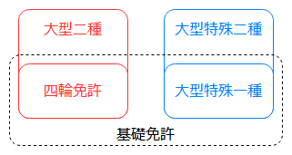
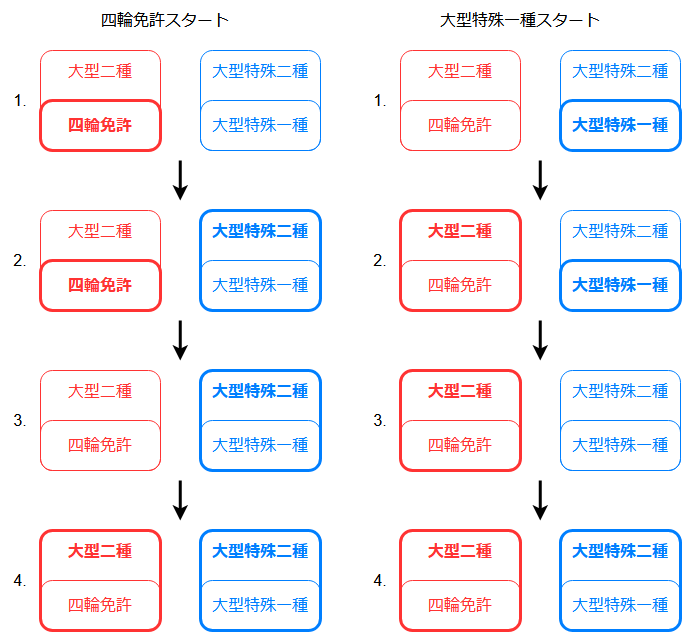

免許計画 その2 最少フル免許への道のり
前回目指す方針となった最少フル免許について、いろいろと調査。
ルールと取得順
上位免許を取得している状態だと下位免許の一部取消し申請は行えないため、適当に上位免許を取ってから雑に要らない下位を取消して最少フル免許達成、という方法は使えない。また、変な下位免許を取得してしまうと詰む可能性があるため、取得順をちゃんと検討する必要がある。
上位下位の関係の図を再掲。

受験資格
まずはルールを確認する。道路交通法 第九十六条 参照。年齢だの視力だのは省略している。
なお、「大型免許、中型免許、準中型免許、普通免許」は長いので、以下では「四輪免許」と省略する。
大型二種
以下のいずれかを満たす必要がある。
- 四輪免許又は大型特殊免許を所持しており、かつどれかの経験が3年以上ある
- 他の二種免許を所持している
大型特殊二種
同上。
けん引二種
以下のいずれかを満たす必要がある。
- 「けん引一種」と「四輪免許又は大型特殊免許」をそれぞれ所持しており、かつどれかの経験が3年以上
- 他の二種免許を所持している
大型自動二輪
無し。
取得可能な順番
次に、どのような順番ならルールを満たしつつ最少フル免許になるのかを検討する。
なお、「四輪免許又は大型特殊免許」は長いので、以下では「基礎免許」と省略する。
大型自動二輪
条件もないし、他の免許とも絡まないので、いつでも良い。
けん引二種
二つある条件のうち、前者(けん引一種と基礎免許を所持)を満たそうとするとけん引一種を取らなくてはいけないが、その状態でけん引二種を取得してしまうとけん引一種を一部取消しすることが出来なくなるため、うまくいかない。そのため、後者(他の二種免許を所持)を満たしてから取得することになる。
大型二種、大型特殊二種
これら二つのうち、最初に取る方は前者の条件(基礎免許を所持)を満たす必要がある(けん引二種を含め、まだ他の二種を持っていない状態のため)。
が、そのための基礎免許自体は最少フル免許には不要なものとなるので、可能であればどこかのタイミングで一部取消し申請をしたい。上位免許を取得してしまうと基礎免許を一部取消し申請出来なくなるため、取得している基礎免許の上位免許ではないほうを最初に取得する必要がある。

つまり、以下2パターンのいずれかの方法しかない。
基礎免許として四輪免許を取るパターン
- 四輪免許を取得
- 四輪免許を基礎免許に、大型特殊二種を取得
- 大型二種を取得してしまうと、四輪免許を取り消せなくなる
- 四輪免許を一部取消し申請
- 大型二種を取得(他の二種を所持しているので取得可能)
基礎免許として大型特殊一種を取るパターン
- 大型特殊一種を取得
- 大型特殊一種を基礎免許に、大型二種を取得
- 大型特殊二種を取得してしまうと、大型特殊一種を取り消せなくなる
- 大型特殊一種を一部取消し申請
- 大型特殊二種を取得(他の二種を所持しているので取得可能)
両パターンを図にするとこうなる。

こう見ると、四輪免許と大型特殊一種で左右対称な事が分かる(それらの条件自体は同じだからね)。
自分に当てはめたときに考えるべき事
すでに中型免許(8t限定)を所持しているため、「四輪免許スタート」パターンをベースにする。
教習所で取得するか、免許センターで直接受験(いわゆる一発試験)するか
大型二種
一発試験の場合
- 免許センターにて大型仮免許試験を受ける
- 平日のみ
- 受験料(2900円)と試験車使用料(1450円)が受験の都度掛かる(試験に落ちたらその分追加が必要)
- 仮免許証交付料(1150円)は、教習所だったとしても掛かるので気にしない
- 仮免許を持って路上練習を行う
- 本試験を受ける前3ヶ月以内に、5日間以上の路上練習が必要
- 大型二種免許の場合は、乗員定員30人以上のバス型の大型自動車で練習(!)
- 乗用車の場合は、知り合いに車を借りて(かつ隣に乗ってもらって)路上練習する例をたまに聞くけど、大型バスを借りるのは現実的ではない
- 郊外に行けば有料の練習場とかもあるが、結構お金が掛かる(入校金 + 場内見極め2h + 路上練習5hで 83000円くらいの例を見つけた)
- 免許センターにて、大型二種免許試験を受ける
- 平日のみ
- 受験料(4800円)と試験車使用料(2850円)が受験の都度掛かる(試験に落ちたらその分追加が必要)
- 免許証交付料(2050円)は、教習所だったとしても掛かるので気にしない
- 合格後、教習所で(!)取得時講習を6時限受講する必要がある
- 受講料 27000円
金額は、トータルで 146000円くらいか(仮免許試験と本試験にそれぞれ3回目で受かったと仮定)。あとは免許センターが平日オンリーなのが厳しそう。
こう見ると、一発試験以外にもいろいろと必要なのね。だったら教習所に通った方が早いかな、と思ってしまう。
教習所に通う場合
- 教育訓練給付制度の対象になる
- 実際に大型バスの走り方を指導してもらえる
- 教科書通りの走り方を思い出すと言うか指導してもらえる
- (自習出来るからあんまり要らないけど)学科の授業を受けられる
大型自動二輪
普通自動二輪すら乗ったことないから、可能なら教習所で取得したい。
大型特殊二種
実は、免許センターで直接受験する以外の方法がない。これは、道路交通法で大型特殊二種の教習に関する規定が存在しておらず、教習所での取得が出来ないため。
けん引二種
大型特殊二種と同じく、免許センターで直接受験する以外の方法がない。
大型二種の教習を受けるタイミング
中型免許を一部取消し申請したあとは、自家用車に乗れない期間を減らすためになるべく早く大型二種を取得したい(下図で言う 3. の期間をなるべく短くしたい)。
そのためにはなるべく早く教習を受け始めた方が良い(返納してから入所とかでは遅すぎる)気がするが、どのタイミングで入所出来るのかや、道交法上問題ないかなどについて、各所に問い合わせた。
前提
教習所に通って(大型二種)免許を取得する場合の、一般的な流れはこんな感じ。
- 教習所では、技能教習と学科教習と取得時教習を受講する
- 技能に問題がなければ(卒業検定に合格すれば)、卒業証書をもらえる
- 免許センターで必要な試験を受け、免許を発行(正確には既存の免許証へ併記)してもらう
- 学科試験: 他の二種免許を持っていれば免除
- 技能試験: 卒業証書があるので免除
- 取得時教習: 卒業証書があるので免除
もともと教習所だけでは免許は取れないというか、本来は免許センターでの直接受験が基本で、もし教習所を卒業していればいくつかのステップが省略出来るだけだ、と言うことが分かる。
教習所へ問い合わせ(1)
Q. そもそも、所持免許に応じた大型二種取得のコースがあるか。
パターン1 所持免許: 中型免許(8t限定)
- コースあり
- 教育訓練給付制度の対象
パターン2 所持免許: 中型免許(8t現地)、大型特殊二種
- コースあり
- 二種に関する学科が10コマ減るため、パターン1 に比べて4万円弱安くなる
- が、教育訓練給付制度の対象コースではない(!)
- 無理矢理対象にするために、これらの免許を持った状態でパターン1として入所する、ということも出来ない
と言うわけで、大型特殊二種を取得するより前に入所しないと教育訓練給付制度を利用出来なさそう。でも大型二種を実際に併記したいのは大型特殊二種を取得したあとになるため、これが問題ないかどうか、確認が必要。
教習所へ問い合わせ(2)
Q. 卒業証書を受け取ったあと、併記するまでの間に他の免許を取得しても問題ないですか。
A. 教習所としては、卒業したあとは関与しません。
オーケー、それが聞きたかった。次は免許センターに問い合わせだ。
免許センターへ問い合わせ
Q. 教習所で大型二種コースに入所したあと、卒業証書を使った併記より前に所持免許が増減しても問題ないですか。
A. 問題ない。
Q. 上記の場合、所持免許が教習所に入所した時点から変わっていますが、卒業証書を使って問題なく技能試験・取得時教習が免除されますか。また、例えば大型特殊二種を割り込ませた場合、問題なく学科試験が免除されますか。
A. はい。卒業証書は単体で有効で、入所時の所持免許などは関係ない。あくまでも、その瞬間に所持している免許の内容に応じて、何を免除するかなどが変わる。
よし、やりたいことは出来そうだ。
おまけ: 警視庁 運転免許本部へ問い合わせ
Q. XX年に普通免許取得→YY年に大型特殊二種取得→その後普通免許を一部取消しした場合、免許証の取得日の "他" に書かれる日付は XX年と YY年どちらになるか(どちらの免許も取得日は "他" に記載されるものなので)
A. XX年のままになる
Q. 上記で、ゴールド免許だった場合、維持されるか
A. 経歴もそのまま残るので、ゴールドが維持される
タイミングまとめ
- 教習所に通い、大型二種の卒業証書をもらう
- 免許センターで大型特殊二種を取得し、併記する
- 教習所で習った二種学科を忘れないうちに受験する
- 本来は卒業後に大型二種で二種学科を受験するので、対象が差し替わっただけであり、損はしていない
- 中型免許を一部取消し申請する
- これと次の項目は同じ日に行わないと、車で帰れなくなる
- 手続き上、同時に申請することも可能(免許センターに確認済み)だが、大型特殊二種だけの免許を記念撮影したいので別々に申請する予定
- これと次の項目は同じ日に行わないと、車で帰れなくなる
- 大型二種の卒業証書を使い、大型二種を併記する(大型特殊二種も所持しているので学科試験・技能試験・取得時講習をすべて免除)
方針は定まったので、このあとは教育訓練給付制度の手続きを進めて、実際に大型二種の教習を受けるところからだな。